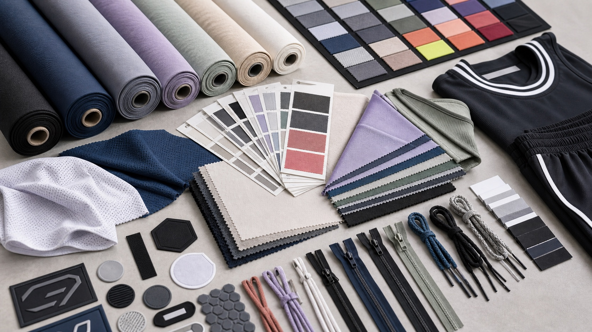
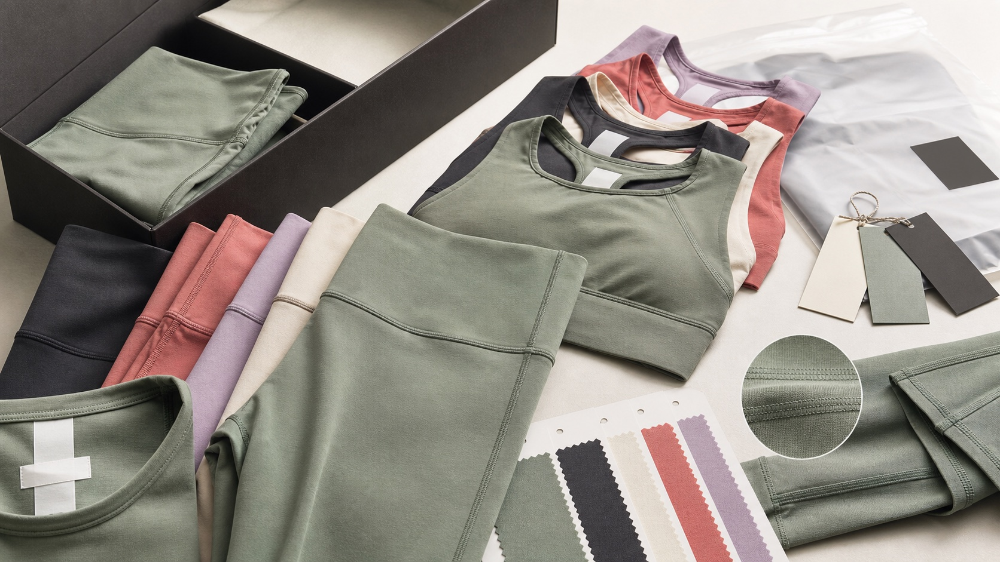
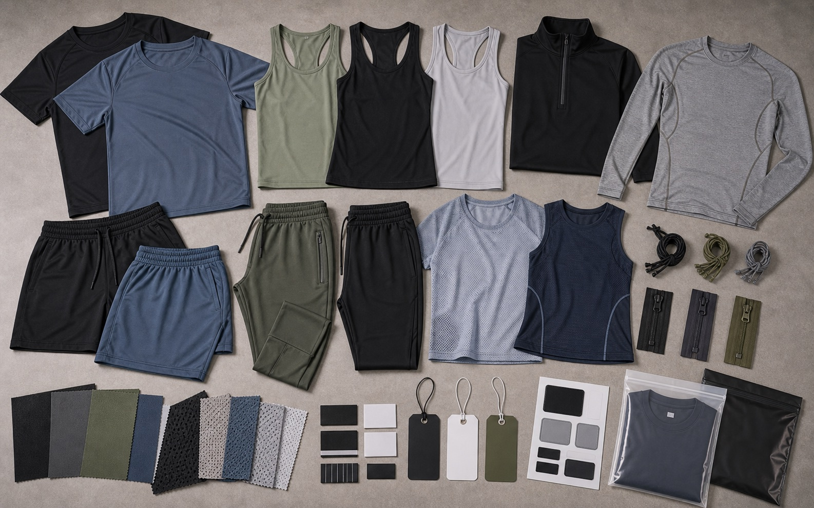

Fabric and decoration
Sportswear Materials
Match fabric and decoration method to stretch, compression, opacity, breathability, wash durability, and target cost.
Activewear Fabrics
- Nylon spandex for soft yoga leggings and bras
- Polyester spandex for training and teamwear
- Fleece, French terry, and cotton blends for athleisure
- Mesh, rib, seamless knit, jacquard, and recycled fabric options
Decoration Methods
- Sublimation for basketball and football kits
- Heat transfer and silicone logo for activewear
- Embroidery, screen print, woven patches, and rubber badges
- Neck labels, size labels, hangtags, and barcode labels
Material library
Fabric, trims, and product use cases in one view
Each fabric choice is matched with the product category, decoration method, handfeel, opacity, recovery, and packaging target.

Trims Library
Fabric, zippers, labels, and color systems

Yoga Fabric
Soft stretch, opacity, and compression balance

Training Fabric
Breathable, quick-dry, and durable materials
Material matching
Match fabric performance to each product
Compare handfeel, stretch, breathability, opacity, durability, and decoration compatibility before requesting samples.
Soft handfeel, high stretch recovery, smooth compression, and opacity for leggings and sports bras.
Quick-dry, breathable, durable fabric for gym tops, shorts, track pants, and compression layers.
Colorfast polyester mesh and interlock for basketball uniforms, football kits, sponsor graphics, and player numbers.
French terry, cotton fleece, rib, and interlock for hoodies, joggers, tracksuits, and lifestyle sets.
Buyer workflow
Move from fabric direction to an approved material record
Use the selection guide to define the material, compare coded swatches, test it in the garment, and connect approval to the tech pack and bulk inspection.
Need fabric suggestions?
Tell us your product type, desired handfeel, target price, and market. We will recommend practical fabric options.